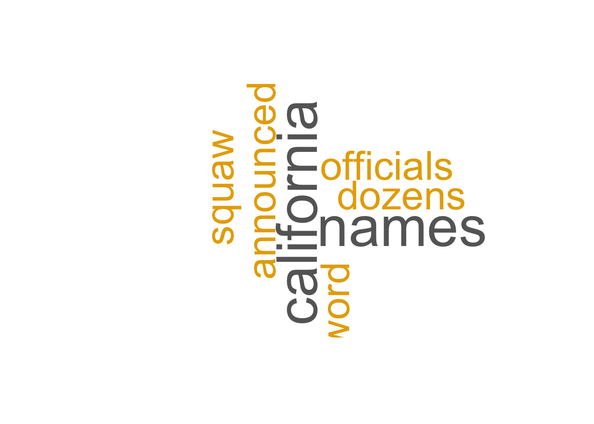

Attaching package: 'dplyr'The following objects are masked from 'package:stats':
filter, lagThe following objects are masked from 'package:base':
intersect, setdiff, setequal, unionLoading required package: RColorBrewer
Attaching package: 'dplyr'The following objects are masked from 'package:stats':
filter, lagThe following objects are masked from 'package:base':
intersect, setdiff, setequal, unionLoading required package: RColorBrewerMy github page for this project here
My final project aims to analyze media framing and sentiment in coverage of BLM protest. This project does the following:
With my account with NewsAPI I gather multiple articles related to “Black Lives Matter protests”. To prepare the text data for analysis, I combine the title, description, and content fields from the articles into a single column called text for analysis.
I then tokenize the combined text column into individual words using the untest_tokens function from tidy text and create blm_words.
I remove all the stop words and irrelevant words like http, amp, etc.
Here I begin to build a word count to calculate the frequencies across all of the articles. Then I generate a word cloud that visualizes the most frequent words.
[1] "Word Cloud for Naples Daily News"
[1] "Word Cloud for BBC News"[1] "Word Cloud for The Atlantic"Warning in wordcloud(words = source_words$word, freq = source_words$n, min.freq
= 2, : time could not be fit on page. It will not be plotted.Warning in wordcloud(words = source_words$word, freq = source_words$n, min.freq
= 2, : trump could not be fit on page. It will not be plotted.Warning in wordcloud(words = source_words$word, freq = source_words$n, min.freq
= 2, : trump’s could not be fit on page. It will not be plotted.Warning in wordcloud(words = source_words$word, freq = source_words$n, min.freq
= 2, : women could not be fit on page. It will not be plotted.[1] "Word Cloud for Scientific American"[1] "Word Cloud for Naturalnews.com"Warning in wordcloud(words = source_words$word, freq = source_words$n, min.freq
= 2, : human could not be fit on page. It will not be plotted.Warning in wordcloud(words = source_words$word, freq = source_words$n, min.freq
= 2, : lawyer could not be fit on page. It will not be plotted.Warning in wordcloud(words = source_words$word, freq = source_words$n, min.freq
= 2, : living could not be fit on page. It will not be plotted.Warning in wordcloud(words = source_words$word, freq = source_words$n, min.freq
= 2, : middleeasteye.net could not be fit on page. It will not be plotted.Warning in wordcloud(words = source_words$word, freq = source_words$n, min.freq
= 2, : minnesota could not be fit on page. It will not be plotted.Warning in wordcloud(words = source_words$word, freq = source_words$n, min.freq
= 2, : nightmare could not be fit on page. It will not be plotted.Warning in wordcloud(words = source_words$word, freq = source_words$n, min.freq
= 2, : orwell could not be fit on page. It will not be plotted.Warning in wordcloud(words = source_words$word, freq = source_words$n, min.freq
= 2, : outspoken could not be fit on page. It will not be plotted.Warning in wordcloud(words = source_words$word, freq = source_words$n, min.freq
= 2, : party could not be fit on page. It will not be plotted.Warning in wordcloud(words = source_words$word, freq = source_words$n, min.freq
= 2, : politicians could not be fit on page. It will not be plotted.Warning in wordcloud(words = source_words$word, freq = source_words$n, min.freq
= 2, : reminiscent could not be fit on page. It will not be plotted.Warning in wordcloud(words = source_words$word, freq = source_words$n, min.freq
= 2, : republished could not be fit on page. It will not be plotted.Warning in wordcloud(words = source_words$word, freq = source_words$n, min.freq
= 2, : rights could not be fit on page. It will not be plotted.Warning in wordcloud(words = source_words$word, freq = source_words$n, min.freq
= 2, : school could not be fit on page. It will not be plotted.Warning in wordcloud(words = source_words$word, freq = source_words$n, min.freq
= 2, : simple could not be fit on page. It will not be plotted.Warning in wordcloud(words = source_words$word, freq = source_words$n, min.freq
= 2, : sondos could not be fit on page. It will not be plotted.Warning in wordcloud(words = source_words$word, freq = source_words$n, min.freq
= 2, : supporters could not be fit on page. It will not be plotted.Warning in wordcloud(words = source_words$word, freq = source_words$n, min.freq
= 2, : trade could not be fit on page. It will not be plotted.Warning in wordcloud(words = source_words$word, freq = source_words$n, min.freq
= 2, : understood could not be fit on page. It will not be plotted.Warning in wordcloud(words = source_words$word, freq = source_words$n, min.freq
= 2, : urges could not be fit on page. It will not be plotted.Warning in wordcloud(words = source_words$word, freq = source_words$n, min.freq
= 2, : vice could not be fit on page. It will not be plotted.Warning in wordcloud(words = source_words$word, freq = source_words$n, min.freq
= 2, : words could not be fit on page. It will not be plotted.[1] "Word Cloud for Vox"[1] "Word Cloud for RT"
[1] "Word Cloud for Truthout"[1] "Word Cloud for IndieWire"[1] "Word Cloud for The Cut"
[1] "Word Cloud for NBC News"[1] "Word Cloud for Thesocietypages.org"[1] "Word Cloud for USA Today"[1] "Word Cloud for [Removed]"[1] "Word Cloud for Thenation.com"Warning in wordcloud(words = source_words$word, freq = source_words$n, min.freq
= 2, : repercussions could not be fit on page. It will not be plotted.Warning in wordcloud(words = source_words$word, freq = source_words$n, min.freq
= 2, : retaliating could not be fit on page. It will not be plotted.Warning in wordcloud(words = source_words$word, freq = source_words$n, min.freq
= 2, : reverberated could not be fit on page. It will not be plotted.Warning in wordcloud(words = source_words$word, freq = source_words$n, min.freq
= 2, : secrets could not be fit on page. It will not be plotted.Warning in wordcloud(words = source_words$word, freq = source_words$n, min.freq
= 2, : standard could not be fit on page. It will not be plotted.Warning in wordcloud(words = source_words$word, freq = source_words$n, min.freq
= 2, : symbolic could not be fit on page. It will not be plotted.Warning in wordcloud(words = source_words$word, freq = source_words$n, min.freq
= 2, : takes could not be fit on page. It will not be plotted.Warning in wordcloud(words = source_words$word, freq = source_words$n, min.freq
= 2, : thwarting could not be fit on page. It will not be plotted.Warning in wordcloud(words = source_words$word, freq = source_words$n, min.freq
= 2, : upper could not be fit on page. It will not be plotted.Warning in wordcloud(words = source_words$word, freq = source_words$n, min.freq
= 2, : utopia could not be fit on page. It will not be plotted.Warning in wordcloud(words = source_words$word, freq = source_words$n, min.freq
= 2, : vicious could not be fit on page. It will not be plotted.[1] "Word Cloud for Adweek"Warning in wordcloud(words = source_words$word, freq = source_words$n, min.freq
= 2, : subsidiary could not be fit on page. It will not be plotted.[1] "Word Cloud for The Root"[1] "Word Cloud for The Intercept"Warning in wordcloud(words = source_words$word, freq = source_words$n, min.freq
= 2, : wearing could not be fit on page. It will not be plotted.[1] "Word Cloud for Breitbart News"[1] "Word Cloud for Yahoo Entertainment"[1] "Word Cloud for Vulture"[1] "Word Cloud for DW (English)"[1] "Word Cloud for Legalinsurrection.com"[1] "Word Cloud for menshealth.com"
[1] "Word Cloud for Cosmopolitan.com"[1] "Word Cloud for CounterPunch"Warning in wordcloud(words = source_words$word, freq = source_words$n, min.freq
= 2, : neoliberalism could not be fit on page. It will not be plotted.Warning in wordcloud(words = source_words$word, freq = source_words$n, min.freq
= 2, : pathologizing could not be fit on page. It will not be plotted.Warning in wordcloud(words = source_words$word, freq = source_words$n, min.freq
= 2, : thousands could not be fit on page. It will not be plotted.Warning in wordcloud(words = source_words$word, freq = source_words$n, min.freq
= 2, : tuesday could not be fit on page. It will not be plotted.Warning in wordcloud(words = source_words$word, freq = source_words$n, min.freq
= 2, : union could not be fit on page. It will not be plotted.[1] "Word Cloud for Boston Herald"[1] "Word Cloud for Colorado Public Radio"[1] "Word Cloud for Democracy Now!"[1] "Word Cloud for Typepad.com"[1] "Word Cloud for Newsweek"[1] "Word Cloud for Reason"[1] "Word Cloud for Lithub.com"Warning in wordcloud(words = source_words$word, freq = source_words$n, min.freq
= 2, : presidential could not be fit on page. It will not be plotted.[1] "Word Cloud for The Conversation Africa"[1] "Word Cloud for The Daily Caller"Warning in wordcloud(words = source_words$word, freq = source_words$n, min.freq
= 2, : potential could not be fit on page. It will not be plotted.Warning in wordcloud(words = source_words$word, freq = source_words$n, min.freq
= 2, : homeless could not be fit on page. It will not be plotted.Warning in wordcloud(words = source_words$word, freq = source_words$n, min.freq
= 2, : marine could not be fit on page. It will not be plotted.Warning in wordcloud(words = source_words$word, freq = source_words$n, min.freq
= 2, : ravaged could not be fit on page. It will not be plotted.Warning in wordcloud(words = source_words$word, freq = source_words$n, min.freq
= 2, : standby could not be fit on page. It will not be plotted.Warning in wordcloud(words = source_words$word, freq = source_words$n, min.freq
= 2, : subway could not be fit on page. It will not be plotted.Warning in wordcloud(words = source_words$word, freq = source_words$n, min.freq
= 2, : tuesday could not be fit on page. It will not be plotted.[1] "Word Cloud for Daily Signal"[1] "Word Cloud for Teen Vogue"[1] "Word Cloud for Celebitchy.com"[1] "Word Cloud for Thecuriousbrain.com"[1] "Word Cloud for Juancole.com"Warning in wordcloud(words = source_words$word, freq = source_words$n, min.freq
= 2, : insurrectionist could not be fit on page. It will not be plotted.Warning in wordcloud(words = source_words$word, freq = source_words$n, min.freq
= 2, : january could not be fit on page. It will not be plotted.Warning in wordcloud(words = source_words$word, freq = source_words$n, min.freq
= 2, : monumental could not be fit on page. It will not be plotted.Warning in wordcloud(words = source_words$word, freq = source_words$n, min.freq
= 2, : people could not be fit on page. It will not be plotted.Warning in wordcloud(words = source_words$word, freq = source_words$n, min.freq
= 2, : provided could not be fit on page. It will not be plotted.Warning in wordcloud(words = source_words$word, freq = source_words$n, min.freq
= 2, : provoked could not be fit on page. It will not be plotted.Warning in wordcloud(words = source_words$word, freq = source_words$n, min.freq
= 2, : reelecting could not be fit on page. It will not be plotted.Warning in wordcloud(words = source_words$word, freq = source_words$n, min.freq
= 2, : special could not be fit on page. It will not be plotted.Warning in wordcloud(words = source_words$word, freq = source_words$n, min.freq
= 2, : trump could not be fit on page. It will not be plotted.[1] "Word Cloud for In These Times"[1] "Word Cloud for Wnd.com"[1] "Word Cloud for Advocate.com"[1] "Word Cloud for Dianeravitch.net"
[1] "Word Cloud for Crossway.org"[1] "Word Cloud for Whyevolutionistrue.com"[1] "Word Cloud for The New York Review of Books"[1] "Word Cloud for Chinafile.com"[1] "Word Cloud for Freerepublic.com"[1] "Word Cloud for Substack.com"Warning in wordcloud(words = source_words$word, freq = source_words$n, min.freq
= 2, : publication could not be fit on page. It will not be plotted.Warning in wordcloud(words = source_words$word, freq = source_words$n, min.freq
= 2, : subscriptions could not be fit on page. It will not be plotted.Warning in wordcloud(words = source_words$word, freq = source_words$n, min.freq
= 2, : support could not be fit on page. It will not be plotted.Warning in wordcloud(words = source_words$word, freq = source_words$n, min.freq
= 2, : weekly could not be fit on page. It will not be plotted.Warning in wordcloud(words = source_words$word, freq = source_words$n, min.freq
= 2, : writing could not be fit on page. It will not be plotted.[1] "Word Cloud for Richmond.com"[1] "Word Cloud for Americanthinker.com"[1] "Word Cloud for Slate Magazine"[1] "Word Cloud for Roanoke Times"[1] "Word Cloud for Atlas Obscura"[1] "Word Cloud for Wagingnonviolence.org"[1] "Word Cloud for ABC News"[1] "Word Cloud for Lewrockwell.com"[1] "Word Cloud for USA Today"[1] "Word Cloud for BBC News"[1] "Word Cloud for NBC News"[1] "Word Cloud for The Atlantic"[1] "No data available for MSNBC"
[1] "Word Cloud for Boston Herald"[1] "No data available for The New Yorker"Here is where I created a Bar Plot to visualize the top words frequencies
Lastly, I conduct a sentiment analysis. Using Bing Lexicon, I match words from the tokenized blm_words with the bing sentiment lexicon, which classifies words as positive or negative. It counts the number of positive and negative words in the dataset.